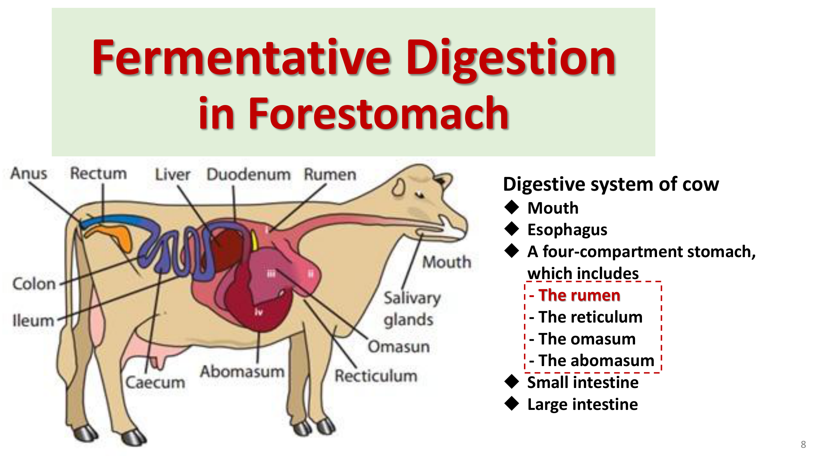
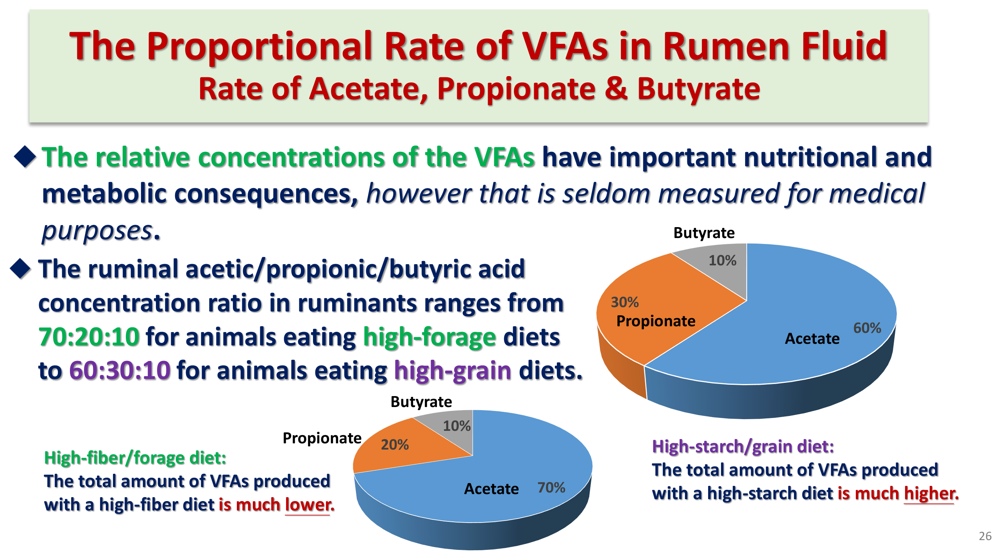
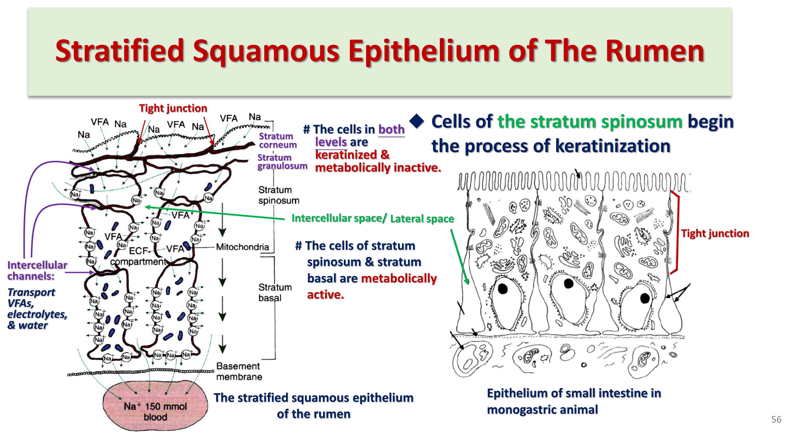
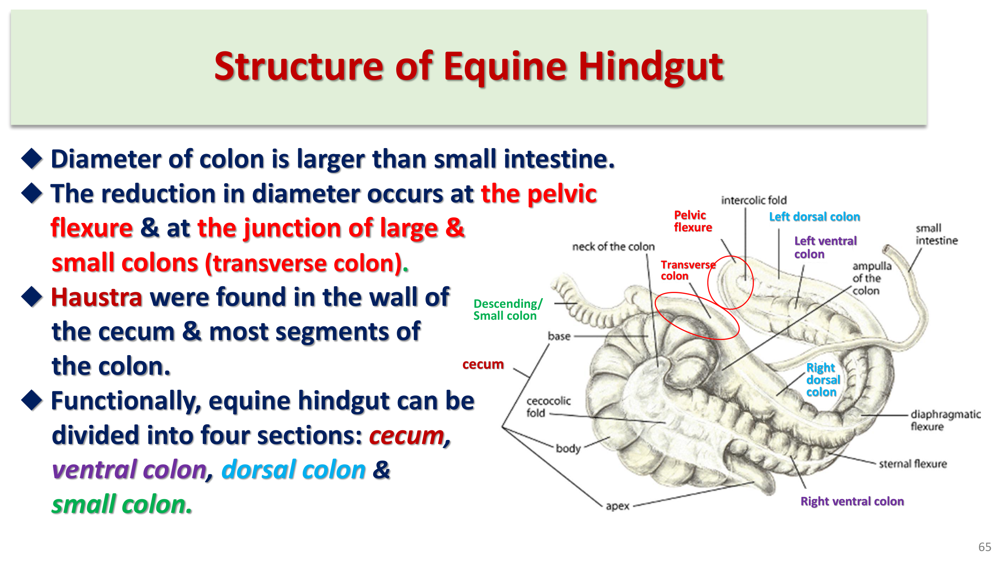

發酵消化總論：前胃vs後腸
發酵消化的本質是微生物代謝作用，而非動物自身的酵素消化；理解發酵消化與一般腺體消化的根本差異，是理解反芻動物整套消化生理的起點。
發酵消化 vs 一般腺體消化
- 發酵消化的反應速率遠慢於一般腺體消化
- 受質在發酵過程中被改變的程度遠大於一般消化
- 發酵消化的酵素由微生物產生，而非動物自身分泌
發酵室的解剖分布：前胃 vs 後腸

| 發酵室位置 | 解剖類型 | 代表物種 |
|---|---|---|
| 前胃 Forestomach | 四腔室胃 | 反芻獸（牛、羊）、河馬 |
| 三腔室胃 | 駱駝科（駱馬、羊駝） | |
| 單腔室胃（但仍發酵） | 疣猴科猴、樹懶 | |
| 後腸 Hindgut | 單胃草食動物 | 馬、犀牛、貘（大型奇蹄目） |
| 單胃草食動物 | 齧齒類（大鼠）、兔、無尾熊等小型動物 |
多數單胃動物的消化道（胃pH常低於5、小腸持續沖刷）並不利於微生物大量繁殖，因此發酵消化動物必須演化出特化的解剖構造（前胃或擴大的盲腸／結腸），刻意維持接近中性pH、適當濕度、離子強度與氧化還原環境，「培養並維持」龐大的共生微生物族群。本章聚焦牛（前胃發酵代表）與馬（後腸發酵代表）兩大類型。
瘤胃微生物生態
瘤胃內至少有28種以上功能重要的微生物物種，共同構成高度分工又相互依存的複雜生態系統。
三大類微生物
每公克瘤胃內容物約含10–100億個細菌細胞，絕大多數為絕對厭氧菌，依所能分解的受質分為纖維分解菌、澱粉分解菌、蛋白分解菌、產甲烷菌等多種功能群
每公克瘤胃內容物約含10萬–100萬個原蟲細胞，多屬纖毛蟲（Isotricha、Entodinium屬）；可吞噬並儲存澱粉與蛋白質顆粒於體內保護其免受細菌分解，因而減緩快速可發酵受質的分解速度；雖具消化能力，但並非瘤胃功能所必需（反芻動物可在無原蟲狀態下正常存活）
能分解部分木質素，在植物細胞壁的分解上可能扮演重要角色
微生物間的協同分工（交叉餵養 Cross-feeding）
不同功能菌種間存在密切的代謝依存關係，例如Ruminococcus albus（分解纖維素）與Bacteroides ruminicola（分解蛋白質）可交換代謝產物（氨、支鏈脂肪酸）互相利用，形成複雜的營養交換網絡；部分微生物能合成B群維生素供其他菌種利用，這也是反芻動物飼糧通常不需額外添加B群維生素的生理基礎（腸道微生物自行供應）。
醣類受質與細胞壁
植物細胞壁是反芻動物飼糧中最主要的發酵受質，其複雜的醣類組成結構決定了微生物能分解的效率與速度。
醣類的三大類型
植物體內的能量運輸分子，單體至三聚體，如葡萄糖、乳糖、麥芽糖
植物能量儲存型多聚醣類，如支鏈澱粉與直鏈澱粉，是雜食動物飲食中主要能量來源之一
由纖維素構成，是植物的結構組成部分（牧草／飼料），是草食動物最主要的能量來源
植物細胞壁的結構類比
植物細胞壁結構可類比動物結締組織：纖維素（長纖維狀分子，提供強度）類似膠原蛋白；半纖維素、果膠與木質素（將纖維素黏合固定）類似玻尿酸與軟骨素硫酸鹽——但木質素本身不屬於醣類，是一群異質性的酚類化合物。
木質素的重要性（雙面刃）
- 木質素本身幾乎無法被消化（不論動物本身酵素或微生物酵素皆難以分解）
- 包覆並保護細胞壁碳水化合物，使其免受細菌纖維素酶作用——木質素含量越高，飼料整體可消化率越低
- 木質素濃度隨植物成熟度與環境溫度上升而增加——因此幼嫩、涼季生長的牧草，可消化率高於成熟、熱季生長的牧草，此概念直接影響牧場的飼草管理與採收時機
細胞壁醣類（纖維素、半纖維素、果膠）不能被動物自身的腺體消化酵素直接分解利用，必須先經微生物代謝分解，這是發酵消化存在的根本意義——將動物自身無法利用的植物結構性醣類，轉化為動物可吸收利用的能量形式（VFA，見下節）。
VFA生成與代謝路徑
微生物酵素分解醣類產生的葡萄糖等單醣，並不會直接被宿主動物吸收利用，而是立即被微生物本身攝入進行厭氧代謝，最終產物即是反芻動物最重要的能量來源——揮發性脂肪酸（VFA）。
VFA生成的代謝邏輯
主要與次要VFA
乙酸（acetic acid）、丙酸（propionic acid）、丁酸（butyric acid）
戊酸（valeric acid）、異戊酸（isovaleric acid）、異丁酸（isobutyric acid）、2-甲基丁酸（2-methylbutyric acid），多由支鏈胺基酸代謝產生（見下節）
VFA生成與甲烷生成的關聯
厭氧代謝需要氧化態輔因子（NAD⁺）的再生，產甲烷菌經將CO₂還原為甲烷（CH₄）來達成此再生：乙酸生成與甲烷生成呈正相關（乙酸與丁酸生成過程皆會釋出還原態輔因子，需靠產甲烷反應消耗）；丙酸生成與甲烷生成呈負相關（互補關係）——丙酸生成路徑本身即可消耗還原態輔因子，故丙酸生成增加時，對產甲烷反應的需求相對減少。
過量精料攝取、使用細磨或製粒飼料、高澱粉/高穀物飼糧，皆會抑制對環境敏感的產甲烷菌，使甲烷生成減少，連帶降低乙酸生成比例、增加丙酸生成比例——這正是VFA比例會隨飼糧組成改變的分子機轉基礎，也是反芻動物營養學研究降低甲烷排放（溫室氣體管理）的重要切入點。
飼糧組成對VFA比例的影響

VFA對宿主的能量意義
VFA本質上是微生物厭氧代謝的「廢物」（類似需氧代謝產生的CO₂），但對反芻動物而言卻是供應約60–80%飲食能量的最重要能量基質，經瘤胃上皮直接吸收（見「VFA吸收機轉」章節）進入宿主代謝；若VFA未被及時吸收、在瘤胃內堆積，會降低瘤胃pH、抑制甚至終止發酵作用，因此VFA的有效吸收對維持正常瘤胃功能至關重要。
蛋白質發酵與尿素再循環
蛋白質同樣是重要的發酵受質，其代謝路徑與微生物自身蛋白質合成緊密交織，並透過尿素再循環機制，使反芻動物具備利用非蛋白氮源合成蛋白質的獨特能力。
蛋白質發酵的基本路徑
飼糧蛋白質經微生物胞外蛋白酶（多為類胰蛋白酶的endopeptidase）分解為胜肽，胜肽被微生物攝入細胞內後可走兩條路徑：(A) 直接用於合成微生物自身蛋白質；(D) 進一步降解經VFA路徑產生能量（先脫氨產生氨與碳骨架，碳骨架多數可直接進入VFA代謝路徑，但三個支鏈胺基酸〔纈胺酸、白胺酸、異白胺酸〕須先轉換為對應的支鏈脂肪酸，是部分重要纖維分解菌合成支鏈胺基酸所需的必要生長因子）。
微生物量是宿主蛋白質與能量的直接來源
微生物本身的菌體質量（隨後被沖入瓣胃、皺胃並消化吸收）是宿主動物蛋白質與能量需求的主要直接來源，微生物生長速率取決於養分供應速率與微生物被沖出瘤胃的速率兩者間的平衡。
醣類與蛋白質供應的匹配關係
| 情境 | 結果 |
|---|---|
| 胜肽（蛋白質）與葡萄糖供應良好匹配 | 微生物生長↑、VFA↑，氨（NH₃）維持適當水平 |
| 葡萄糖（能量）相對過剩 | VFA↑但微生物生長與氨相對受限（缺乏氮源合成更多菌體） |
| 胜肽（蛋白質）相對過剩 | 氨大量堆積（↑↑）、VFA↑，但微生物生長受限（缺乏足夠可利用能量） |
尿素再循環 Urea Recycling
若醣類供應充足，多數瘤胃微生物（即使原本能利用現成胜肽者）也能直接利用氨合成自身蛋白質——這代表蛋白質可經非蛋白氮源（如氨、硝酸鹽、尿素）在瘤胃內被合成出來。宿主肝臟將體內胺基酸脫胺代謝產生的尿素，可經兩條路徑送回瘤胃：(1) 血液尿素直接擴散進入瘤胃；(2) 經唾液分泌尿素進入瘤胃。進入瘤胃的尿素迅速被微生物尿素酶轉化為氨，再被微生物用於合成菌體蛋白——這個「肝臟生成尿素→瘤胃回收再利用」的循環機制，使反芻動物能有效節省並回收氮素，在低蛋白飼糧下仍能維持相對穩定的微生物蛋白質供應，是反芻動物營養代謝上一大優勢，也是尿素可作為反芻動物飼糧非蛋白氮補充來源的生理基礎。
發酵恆定條件
要維持宿主體內良好的發酵功能，需同時滿足多項生理條件，這些條件由宿主動物的恆定機制主動維持，理解這些數值範圍是重要的考試重點。
| 條件 | 正常範圍 | 維持機轉 |
|---|---|---|
| 溫度 | 約37°C | 宿主體溫恆定 |
| 滲透壓（離子強度） | 約300 mOsm | 唾液與瘤胃上皮電解質交換 |
| 氧化還原電位 | 約−250 ～ −450 mV（強負值，維持厭氧） | 宿主恆定機制主動排除氧氣 |
| pH | 應維持在5.7以上 | 大量唾液分泌（含碳酸氫鹽緩衝液）＋VFA吸收移除 |
此外，發酵功能正常運作還需要：持續供應可發酵受質（採食）、不可消化殘渣（如木質素）須被移除、微生物移除速率須與最適微生物的世代再生時間相容（過快沖出會使有益菌群流失）、以及發酵酸性產物（VFA）必須被緩衝或移除以維持pH。
網胃瘤胃蠕動與反芻
網胃瘤胃（reticulorumen）的蠕動模式對發酵功能至關重要，核心目的是「選擇性滯留正在發酵的物質，同時排出不可發酵殘渣」，可分三種收縮型式，皆由迷走神經調控。
三種收縮型式
每分鐘1–3次，將內容物與瘤胃菌群充分混合以促進有效發酵；採食時頻率最高，深睡時完全消失；粗纖維飼料刺激最頻繁強烈的收縮
將發酵產生的氣體（CO₂、少量CH₄，不含固形物）移送至賁門並排入食道；每次約需30秒，通常每3–5次混合收縮後發生一次；部分噯氣氣體會先吸入氣管肺臟、再隨呼氣排出，可能具有降低打嗝聲響、避免招來掠食者注意的演化意義
將瘤胃內容物（不含氣體）逆送回口腔重新咀嚼，是反芻行為的起始動作
瘤胃內容物的分層與流動
瘤胃內容物依比重與消化程度分層：長纖維物質形成上層纖維墊（fibrous mat），小顆粒懸浮於下層液態部分。初步咀嚼後的1–2公分顆粒經發酵進一步分解至2–3公釐後，才能通過網胃-瓣胃孔進入下一段消化道；粗大顆粒須先經反芻重新咀嚼、縮小顆粒大小、增加細菌附著表面積，才能有效被進一步分解。
反芻 Rumination（Cud Chewing）
牛群休息時，理論上至少60%的牛應正在反芻；若反芻牛比例低於60%，往往提示飼糧纖維含量不足，是牧場營養管理上常用的群體行為觀察指標。
神經調控
網胃瘤胃蠕動由延腦迷走背核經迷走神經支配調控；迷走神經受損時，瘤胃肌肉活動初期完全停止，數日後雖可恢復但變得紊亂不協調、無法支持正常內容物流動——迷走神經被切除的反芻動物無法存活。重要傳入訊號包括：牽張受器（偵測擴張程度，中度擴張促進蠕動與反芻，嚴重擴張如病理性臌氣則抑制蠕動）、內容物質地受器（多汁飼料/穀物/細切飼料負回饋抑制蠕動，乾燥長莖乾草正回饋促進蠕動）、化學受器（偵測pH、VFA濃度、離子強度，pH低於5.0時蠕動嚴重受抑制）。
瓣胃與皺胃功能
瓣胃與皺胃分別扮演過濾/吸收與最終腺體消化的角色，是前胃系統銜接到腺體胃消化的最後兩個環節。
瓣胃 Omasum
由充滿肌肉葉片的「體（greater curvature）」與「管道（lesser curvature）」構成；網胃-瓣胃孔通常保持開啟（尤其網胃收縮第二期時擴張），但瓣胃管道收縮時會短暫關閉、將新進入的內容物擠入葉片間；瓣胃收縮時將內容物由體部推入管道再送往皺胃。瓣胃具龐大的黏膜表面積（葉片構造），推測具吸收功能（VFA與水分），可能在內容物進入皺胃前移除殘餘VFA與碳酸氫鹽，但確切機轉仍不完全清楚。瓣胃-網胃功能對前胃內容物順利排出至關重要，若因外傷損及網胃或瓣胃壁或迷走神經纖維，可能導致瓣胃輸送障礙與迷走神經性消化不良，治療困難。
皺胃 Abomasum
功能類似單胃動物的真胃，收縮將內容物與胃酸/酵素混合，並推送至小腸；瘤胃液中的CO₂在遇到皺胃酸性環境時會因低pH下溶解度降低而釋出，被推回瓣胃、瘤胃準備噯氣排出。
皺胃移位（displaced abomasum, DA）：皺胃收縮力大幅降低時，可能因氣體積聚而漂浮至腹腔上方，常見於分娩後不久的乳牛，常與低纖維飼糧或誘發低血鈣（產乳熱milk fever）的飼糧管理相關，是乳牛生產獸醫學重要的代謝性疾病併發症。
VFA吸收機轉
VFA吸收對維持正常瘤胃功能至關重要，幾乎所有VFA皆直接經前胃上皮吸收，其構造與吸收機轉具有獨特性。

瘤胃上皮構造的特殊性
瘤胃上皮是複層鱗狀上皮，結構上與小腸/結腸的單層吸收上皮截然不同，但功能上卻能達到類似小腸/結腸吸收上皮的高效吸收能力，是消化生理學上一個有趣的結構-功能對比案例。
VFA吸收的分子機轉
多數VFA在瘤胃液中以解離型式（Ac⁻）存在（HAc ⇌ H⁺ + Ac⁻）；解離型VFA須先與H⁺（來源：與Na⁺交換，或碳酸解離）結合形成未解離的游離VFA（HAc），才能以簡單擴散方式穿越細胞膜進入上皮細胞（細胞膜對游離VFA具通透性）。
VFA在上皮細胞內的後續代謝（三種VFA各異）
| VFA | 上皮細胞內的處理方式 |
|---|---|
| 乙酸 Acetate | 部分於上皮細胞內完全氧化，其餘以原型吸收進入血液 |
| 丙酸 Propionate | 多數以原型吸收，小部分於上皮細胞內轉為乳酸 |
| 丁酸 Butyrate | 幾乎全數經β-羥丁酸去氫酶轉換為β-羥丁酸（β-hydroxybutyrate）才進入血液——是反芻動物重要的酮體來源 |
丁酸在瘤胃上皮細胞內幾乎完全被轉換為β-羥丁酸（一種酮體）才進入血液循環，這是反芻動物血液中酮體濃度天生就高於單胃動物的正常生理基礎，臨床評估反芻動物酮症（ketosis）時需將此正常生理背景值納入考量，而非直接套用單胃動物的酮體參考範圍。
馬屬後腸發酵比較
馬屬動物的胃與小腸功能類似一般單胃動物，但盲腸與結腸（後腸）擴大特化為發酵室，執行與瘤胃類似的發酵功能，是理解「解剖上單胃、功能上部分似反芻獸」這個特殊分類的重點。

後腸發酵的受質來源
馬的胃與小腸醣類消化效率不如典型單胃動物，即使高穀物飼糧下，高達29%的飼糧澱粉可能未被小腸消化、直接進入盲腸結腸成為後腸發酵的受質，前段胃與小腸的浸泡與酸性環境處理可能有助於增加後續微生物分解的可及性。
後腸發酵與瘤胃發酵的關鍵差異
| 瘤胃發酵（牛） | 後腸發酵（馬） | |
|---|---|---|
| 發酵室相對消化道位置 | 發酵在吸收之前（胃部位） | 發酵在吸收之後（小腸後） |
| 微生物蛋白質利用 | 微生物菌體隨後經皺胃/小腸消化吸收，是宿主重要蛋白質來源 | 缺乏有效機制回收後腸合成的微生物蛋白，多數隨糞便排出，僅少量胺基酸可在盲腸/結腸被直接吸收 |
| 氮素再循環 | 尿素再循環供應微生物氮源 | 同樣具尿素再循環機制，供應後腸微生物氮源 |
| 整體發酵效率 | 效率較高 | 效率不及反芻動物，牧草的可消化能量值通常低於牛 |
盲腸與結腸的蠕動功能
與瘤胃類似，馬後腸的解剖特徵與蠕動模式也致力於選擇性滯留長顆粒物質以利發酵：盲腸每3–4分鐘發生一次強力收縮，將內容物推送經盲結腸孔進入右腹側結腸；腹側結腸具三種蠕動型式——結腸袋分節（混合促進發酵）、順向蠕動（推進）、逆向蠕動（延遲通過、增加發酵時間、避免微生物被過快沖出）；骨盆曲的節律點（pacemaker）啟動逆蠕動活動。
骨盆曲是馬結腸阻塞（colon impaction）的好發部位，因其解剖上腸徑縮小、且固態與液態內容物在此處流動速率不同，是馬屬動物腹痛（colic）臨床上重要的解剖學風險位置，理解此處的蠕動生理有助於理解阻塞好發的機轉。
迴腸-盲腸分泌的緩衝功能
迴腸分泌富含碳酸氫鹽與磷酸鹽的液體進入盲腸，功能類似反芻動物唾液對瘤胃的緩衝作用；結腸黏膜也會因應腔內高VFA濃度分泌含Na⁺、碳酸氫鹽與Cl⁻的液體以中和酸度，機轉與瘤胃VFA吸收機轉高度相似。
學習重點整理
本章的核心是理解「微生物才是真正執行發酵消化的主角」，以及VFA如何從微生物代謝廢物轉化為宿主最重要的能量來源。考題常考「VFA比例隨飼糧變化」「反芻三種收縮型式」「VFA吸收與細胞內代謝差異」「瘤胃vs後腸發酵的關鍵差異」。
練習題
涵蓋瘤胃微生物、VFA代謝、瘤胃蠕動與反芻、VFA吸收機轉、後腸發酵比較等章節重點，題型參照國考與轉學考命題方向（含物種比較題），先自己作答再點「顯示答案」核對。
VFA本質上是瘤胃微生物厭氧代謝的廢物（類似需氧代謝產生CO₂），但對反芻動物而言卻是供應約60–80%飲食能量的最重要能量基質，經瘤胃上皮直接吸收進入宿主代謝，若未被及時吸收堆積則會抑制發酵，因此VFA兼具「微生物廢物」與「宿主關鍵能量來源」雙重身分。
高穀物精料飼糧會抑制對環境敏感的產甲烷菌，使甲烷生成減少；因乙酸生成與產甲烷正相關、丙酸生成與產甲烷負相關，甲烷減少會連帶降低乙酸比例、提升丙酸比例，瘤胃VFA比例由高纖飼糧的70:20:10（乙酸:丙酸:丁酸）轉向高穀物飼糧的60:30:10，同時VFA總產量會因高澱粉飼糧而增加。
雖然瘤胃原蟲具備消化能力，能吞噬儲存澱粉與蛋白質，但其功能並非瘤胃正常運作所必需——反芻動物在缺乏原蟲的狀態下仍能正常存活，這與迷走神經切除（動物無法存活）形成鮮明對比，是常見的易混淆考點。
丁酸幾乎全數經β-羥丁酸去氫酶在瘤胃上皮細胞內轉換為β-羥丁酸（一種酮體）才進入血液循環，這與乙酸（部分氧化、部分以原型吸收）及丙酸（多數以原型吸收、小部分轉為乳酸）的處理方式明顯不同，也是反芻動物血液酮體基礎濃度天生高於單胃動物的正常生理基礎。
噯氣收縮的功能是將發酵過程中持續產生的氣體（主要CO₂，少量CH₄，每分鐘約2公升）移送至賁門並排入食道、經口鼻排出，不含固形物，通常每3–5次混合收縮後發生一次；若此功能失效（如病理性臌氣），氣體無法排出將導致嚴重腹脹甚至危及生命。逆嘔收縮才是負責將內容物送回口腔的功能。
反芻動物的發酵室（瘤胃）位於消化道的前段，發酵作用發生在小腸吸收之前，因此瘤胃微生物利用飼糧蛋白質與非蛋白氮源（經尿素再循環）合成的自身菌體蛋白質，會隨瘤胃內容物流動，依序經瓣胃、皺胃的腺體消化與小腸吸收，成為宿主重要的蛋白質與能量來源，這是反芻動物營養代謝上的一大優勢。相對地，馬屬動物的發酵室（盲腸與結腸）位於消化道後段，發酵作用發生在小腸吸收之後，此時微生物合成的菌體蛋白質已無法再回到小腸被吸收利用，馬也缺乏其他有效機制回收後腸合成的微生物蛋白，因此絕大多數隨糞便排出體外流失，僅有少量胺基酸能直接由盲腸或結腸吸收，這也是馬後腸發酵整體效率不如反芻動物瘤胃發酵的重要原因之一。